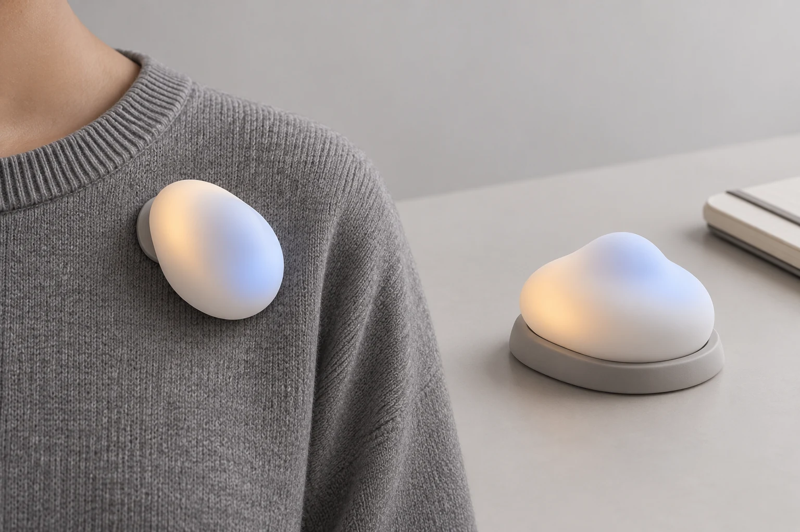

Designing an Artefact for Expressing Everyday Needs
Shape change, colour and placement for expressing support needs and personal boundaries.
Project Overview
Some people recognise that they need help, quiet or personal space, yet hesitate to express these needs because of anticipated judgement, embarrassment or concern about burdening others. This ongoing project at X-Group, SUSTech, explores a small, user-controlled artefact that can be worn on clothing or placed nearby. It combines pneumatic shape change with diffused coloured illumination, allowing users to choose what to communicate and when to display or withdraw an expression. Through iterative design and situated evaluation, the project will examine how form, colour and placement influence interpretation, comfort and willingness to express a need during shared activities.
Visiting Student | Supervised by Assist. Prof. Xueliang Li | Oct 2026 - Dec 2026

Concept illustration of wearable and nearby placement.